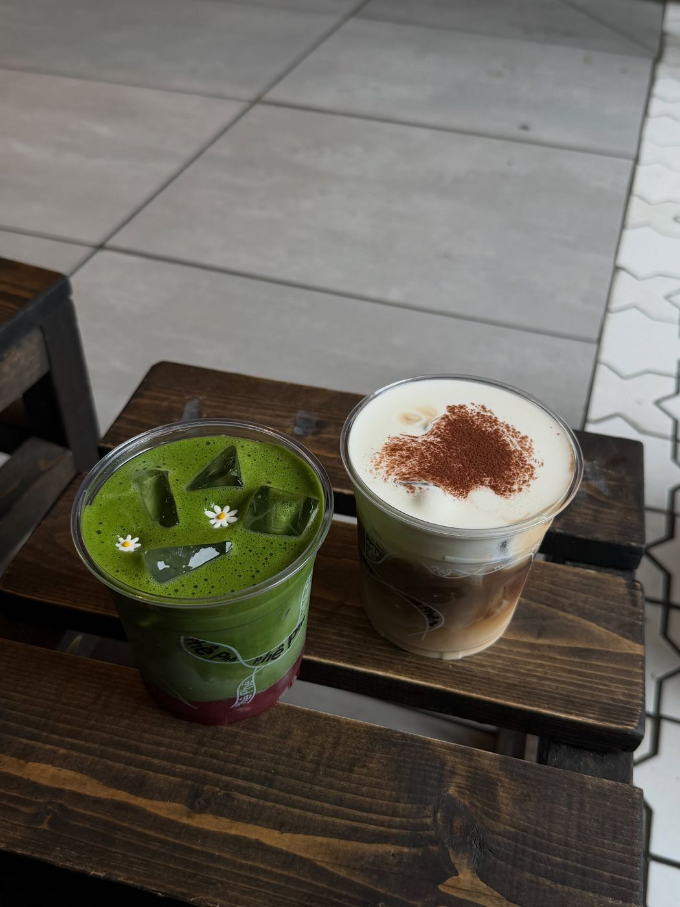
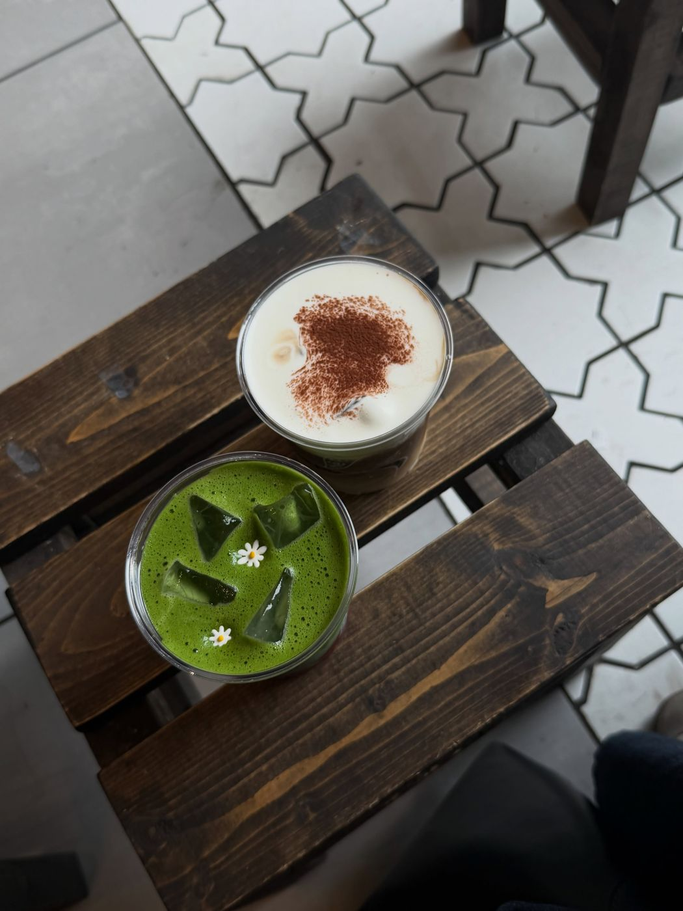
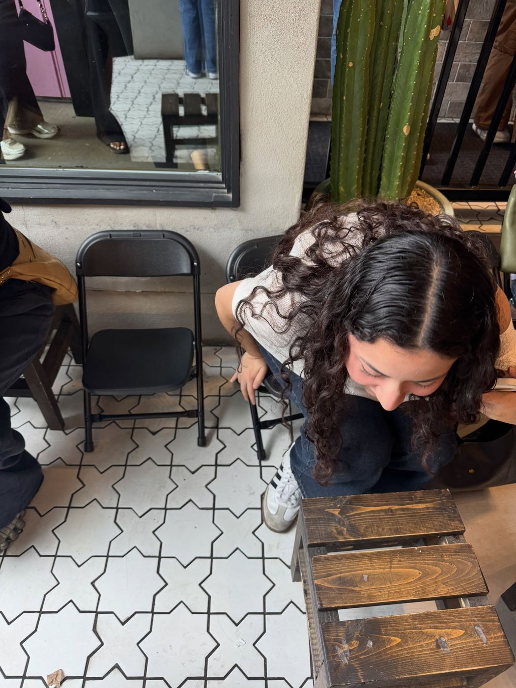

Phê on Capitol Hill
I had been looking forward to trying this one and seeing what all the hype was about! Since last summer Phê has been a pretty popular spot in the area, almost always with a line stretching out the door.
Strawberry matcha iced latte, 6.5/10. I thought this was a nice and rich drink, but the matcha and strawberry flavor could have come through a bit stronger. The flowers on top were so cute and tasty!!
Phê muối, 7/10. @miilaasoto ordered this one: phin coffee, condensed milk and salted cream. A good mix of salty and sweet, and the foam made the coffee.



Honorable mention to the tiny chairs they had where we waited for our drinks, and the tiny table where I took the pics. So cute, maybe I healed my inner child a little.
Cute spot and cute drinks. I really do want to try their banana pudding iced latte next!